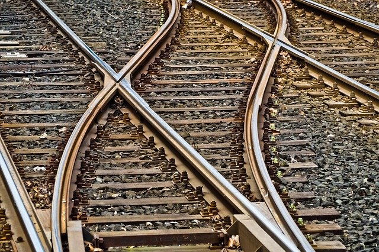

Capítulo 1: ¿Qué es un tren?
Un tren es una serie de vehículos que puede ser arrastrado
por una locomotora o puede ser autopropulsado. Parte integrante de un ferrocarril
son las vías sobre las que discurren los trenes.

De una forma u otra, las vías
fueron muy anteriores al tren de vapor. Los primeros convoyes contaban con la
fuerza humana para ser empujados a lo largo de las vías.
Subir ↑
Capítulo 2: El alba de la época del vapor
Desde que Thomas Newcomen, en 1712, y James Watt, en 1769,
concibieron las primeras máquinas prácticas de vapor, los ingenieros trataron
de aprovechar esta fuerza para propulsar un vehículo.
El primero de este tipo
era difícil de conducir y suscitó tales proptestas en las calles de París que
el proyecto tuvo que ser abandonado.
Las primeras locomotoras funcionales no
surgieron hasta comienzos del siglo XIX, aunque padecían aún numerosos problemas
técnicos. Las máquinas debían de tener potencia suficiente para arrastrar una
pesada carga y hacer tan poco ruido y humo como fuese posible. Exigían también
vías lisas que no se partieran bajo su peso y a las que pudieran aferrarse las
ruedas.
Subir ↑
Capítulo 3: Cómo funciona una locomotora de vapor
Todas las locomotoras de vapor se basan en los principios de
las primeras.
El fuego de carbón en el hogar calienta el agua de la caldera,
produciendo vapor. Este desplaza un pistón de
un lado a otro. El pistón hace girar las ruedas a través de una biela y un cigüeñal.
Maquinista y fogonero necesitan unas tres horas hasta conseguir vapor suficiente
para que se mueva la locomotora.
El maquinista se encargaba del control de la locomotora, empleando el regulador,
el inversor y el freno. Mantenía la velocidad del tren según las señales y las
restricciones de la vía.
El fogonero atendía sobre todo a conservar un buen
volumen de vapor, alimentando el fuego y un nivel adecuado de agua en la caldera,
vigilando el manómetro. El fogonero
ayudaba además al maquinista a observar las señales, sobre todo en las curvas.
Subir ↑
Capítulo 4: El tendido de una línea férrea
El tendido de una línea supone más trabajo del que podría imaginarse.
Como los trenes no pueden remontar cuestas muy pendientes, quizá la distancia
más corta entre dos puntos no sea la más fácil.

A menudo han de seguir trazados
más largos y menos abruptos. Para mantener las vías en el mismo nivel tanto
como sea factible hay que hacer terraplenes, tajos, puentes y túneles. El ingeniero
selecciona la ruta, decidiendo cuál puede ser la pendiente máxima. También hay
que tomar en consideración el tipo de trenes que se utilizarán y el equilibrio
entre carga y velocidad. Cabe evitar con "eses" o espirales las cuestas muy
pronunciadas. Puentes y túneles son caros, pero permiten un trazado más corto
y horizontal.
Para tender líneas públicas largas se necesitaron ejércitos de obreros, porque
eran escasa la maquinaria disponible. Para cavar, tender vías y construir puentes
empleaban herramientas manuales y la fuerza de sus músculos.
Subir ↑
Capítulo 5: Las vías
Las vías han sido decisivas en la historia de los trenes. Los
primeros carriles de hierro fundido se rompían fácilmente. Los carriles de hierro
fundido fueron reemplazados por otros de hierro forjado y a partir de 1870 se
utilizaron los de acero, que apenas se desgastaban. Las vías se mejoraban para
adaptarse a trenes más veloces y pesados.
La mayoría de las líneas principales
tienen ahora carriles soldados en vez de los segmentados que antaño producían
el característico traqueteo. Los ingenieros experimentaron muchos tamaños y
formas de carril hasta lograr el mejor modelo, el de "patín plano".
La distancia
entre los carriles se denomina ancho de vía y varía en todo el mundo. El ancho
estándar de vía en la mayoría de los países europeos y Estados Unidos es de
1.435 mm. Hay otras medidas mayores y menores que la estándar.
Subir ↑
Referencias
Tren - Wikipedia
Imágenes de trenes con licencia de dominio público - Pixabay
Vehículo de locomoción - Encyclopedia Britannica
AMN Railway - Canal de YouTube sobre trenes